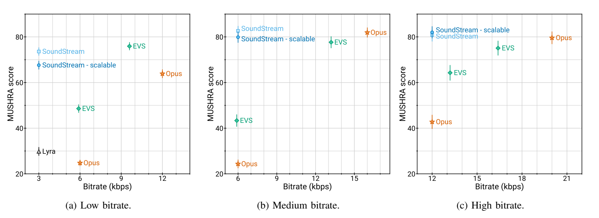

SoundStream: An End-to-End Neural Audio Codec paper¶
目标：¶
- 低码率传输
- 根据通信情况码率可变
- 实现去噪功能
codec形态： | 模态 | 目标 | 常见操作过程 | 优势| 劣势| |----------|------------------------|------------------------------------|-----|-----| |waveform |对波形进行尽可能的重建保真| 时域信号变频域,变换系数进行量化和编码,变换系数进行量化和编码|对语音信号无需做任何假设，可以处理一般信号|中高码率的恢复信号质量好，低码率容易产生伪影| |parametric|尽可能保持变解码前后信号的听感一致| - |低码率传输时听感保持较好|对信号做了分布的强假设，真实信号偏离假设分布可能较远|
使用ML的方式（可学习的量化模型），实现中低码率下codec过程中保持更好的听感。
contribution:¶
- 提出了RVQ
- quantizer dropout, 使一个模型可以处理不同的码率
- 相对于基于梅尔谱特征的方法，压缩的效率较高
- 模型支持流式推理
论文中的中低码率范围是 3Kbps~18Kbps， 原始音频码率是24KHz
模型¶
输入：单声道的语音信号 步骤： 1. encoder把输入语音信号转换成embedding 2. RVQ使用多层codebook对embedding进行编码，编码结果是不同层的codebook的索引 3. decoder重建语音信号
训练方式： 1. end-to-end训练 2. 使用discriminator进行adversrial训练，结合重构loss 3. 使用一个condition siginal来控制是否进行去噪
RVQ dropout：随机选取前N个RVQ模块对embedding进行处理。（是一种结构化dropout）
所有的convolution都是因果的 使用了ELU激活单元，没有使用任何normalization 基于第一个batch的数据，使用K-means来初始化codebook
模型整体¶
编码过程¶
- RVQ dropout是在示例过程中只取前N个RVQ, 有点类似于消除高频分量。
去噪（增强）的实现方式。（见第一个视频的最后部分），因为FiLM的论文还没细读，所以去噪部分暂时略过。
数据¶
训练数据有三种, 均为24KHz 1. 干净语音: LibriTTS dataset 2. 带噪语音: LibriTTS的干净语音和Freesound的噪声进行混合(peak normalization, 3s, -30dB~0dB) 3. 音乐: MagnaTagATune dataset
测试数据, 以下四种数据中各抽取2~4s的数据50个clip, 共计200个clip 1. 从以上三种数据中构建测试集(算3种) 2. 带背景噪声的近场和远场语音
实验结果¶
评测指标 主观指标：MUSHRA 客观指标：PESQ POLQA ViSQOL
压缩率比较实验

RVQ超参选取实验(相同码率下)
|||||
|-|-|-|-|
|Number of quantizers|8|16|80|
|Codebook size N|1024|32|2|
|ViSQOL |4.01 ± 0.03|3.98 ± 0.03|3.92 ± 0.03|
|4.01 ± 0.03|3.98 ± 0.03|3.92 ± 0.03|
去噪实验, 指标为ViSQOL(没怎么看懂这个实验的说明) |Input SNR|soundstream|soundstream->SEANet|SEANet->soundstream| |-|-|-|-| |0dB|2.93 ± 0.02| 3.02 ± 0.03| 3.05 ± 0.02| |5dB|3.18 ± 0.02| 3.30 ± 0.02| 3.31 ± 0.02| |10dB|3.42 ± 0.02| 3.51 ± 0.02| 3.50 ± 0.02| |15dB|3.58 ± 0.02| 3.64 ± 0.02| 3.63 ± 0.02|